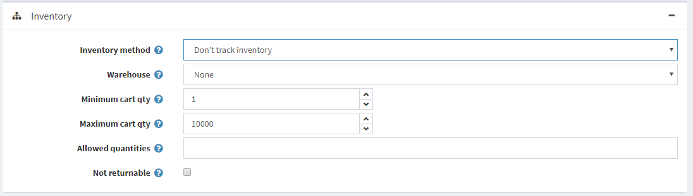
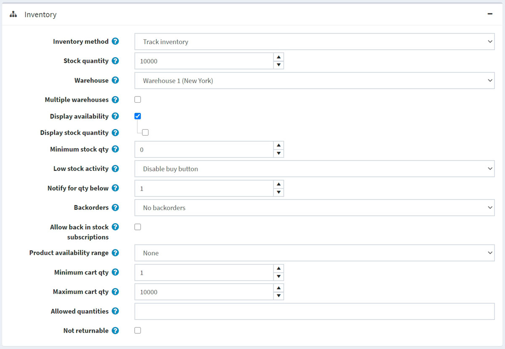
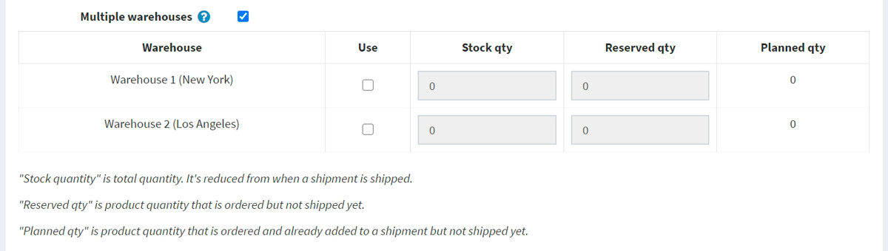
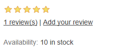
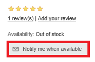
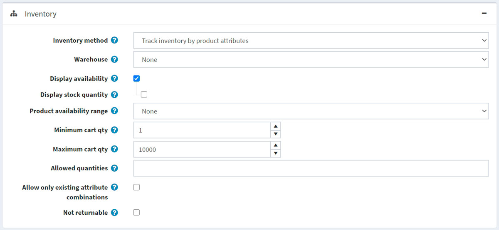
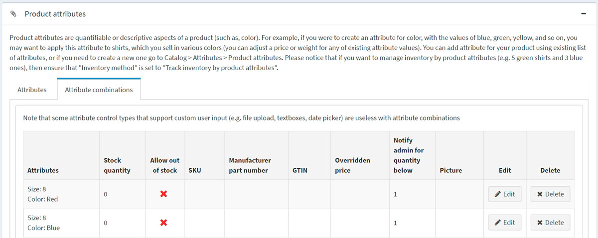
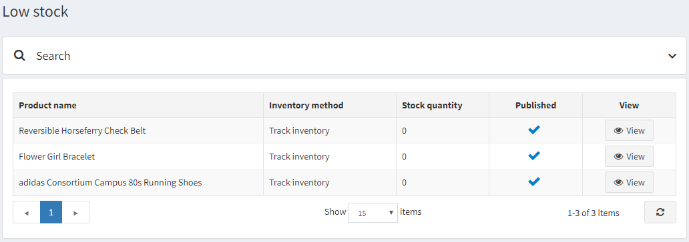

Inventory management
Inventory management is a system of stock level control. In nopCommerce, it consists of setting up the inventory and tracking low stocks.
To set up inventory, go to Catalog → Products → Edit a product. In the Edit product details window, go to the Inventory panel. In this panel, you can choose one of the three inventory methods:
In the next sections, we will see the difference between these methods.
Don't track inventory
Some products might not require inventory tracking. For example, services, second hand or custom-made goods. In this case, a store owner can opt for no tracking by choosing the Don't track inventory option in the Inventory method field. 
In this case, the store owner can define:
- Warehouse that will be used when calculating shipping rates. Read more in the Warehouses chapter.
- Minimum cart qty is a quantity allowed in a customer's shopping cart, for example, set to 3 to only allow customers to purchase 3 or more items of this product.
- Maximum cart qty is a quantity allowed in a customer's shopping cart, for example, set to 5 to only allow customers to purchase 5 or fewer items of this product.
- In the Allowed quantities field, enter a comma-separated list of quantities you want this product to be restricted to. Instead of a quantity textbox that allows them to enter any quantity, they will receive a dropdown list of the values you enter here.
- Select the Not returnable checkbox if this product is not returnable. In this case, a customer won't be allowed to submit a return request.
Track inventory
In case inventory tracking is required, the shop owner can select an Inventory method between two options: Track inventory (by product) or Track inventory by product attributes. The Track inventory option is for those who don't have product variants and simply need to know how many items are left. In this section, we will describe the Track inventory option. Once this option is chosen, the section expands, displaying new fields:

Set up inventory as follows:
Stock quantity is the total quantity. It is reduced whenever an order is shipped.
Choose the Warehouse that will be used when calculating shipping rates. You can manage warehouses on the Configuration → Shipping → Warehouses page. For further details, refer to the Warehouses page.
Select the Multiple warehouses checkbox if you want to support shipping and inventory management from multiple warehouses. This way, you can manage inventory per warehouse:  Click Use in the appropriate row if you want to use this warehouse for the product.
- Enter the Stock qty, which is the total quantity. It is reduced whenever an order is shipped.
- Enter the Reserved qty, which is the product quantity that is ordered but not shipped or added to a shipment yet.
- The Planned qty is the product quantity that is ordered and already added to a shipment but not shipped yet.
To prevent customers from placing orders and then finding out that the product is out of stock, you can take certain actions. Select the Display availability checkbox to display stock availability in the public store.
If required, select the Display stock quantity checkbox to enable customers to see a product stock quantity on the product details page (this checkbox is only displayed when the Display availability checkbox is selected). The following screenshot demonstrates what a customer will see in the public store:

In the Minimum stock qty field, enter the minimum value below which further actions will be taken.
From the Low stock activity dropdown list, select the action to be taken when the stock quantity falls below the minimum stock quantity value, as follows:
- Nothing: store owners can still choose to take no action. It means that customers can continue to order products.
- Disable buy button: the buy button becomes disabled when stock is low. Therefore, customers cannot buy this product but can still see it existing in the store.
- Unpublish: the product is not visible in the store anymore. Used when the product is going to be stopped entirely.
In the Notify for qty below field, enter the value below which a notification email will be sent to the administrator.
Store owners can set up Backorders, that is, orders that can not be fulfilled at the moment of purchase. From the backorders dropdown list, select the required backorder mode as follows:
- No backorders: customers can't purchase this product when there is no stock available.
- Allow qty below 0: customers can purchase this product even when there is no stock available.
- Allow qty below 0 and notify customer: customers can purchase this product even when there is no stock available. In addition, they get a notification with the following message: Out of stock - on backorder and will be dispatched once in stock (Display availability option should also be enabled in this case).
Select Allow back in stock subscriptions, to enable customers to subscribe for notifications about product availability, as on the screenshot below:

Choose the Product availability range that will be displayed for customers when the product is not available at the moment. You can set up availability ranges in the Product availability ranges panel of the Configuration → Shipping → Dates and ranges page. For further details, refer to the Dates and ranges page.
Minimum cart qty is a quantity allowed in a customer's shopping cart, for example, set to 3 to only allow customers to purchase 3 or more items of this product.
Maximum cart qty is a quantity allowed in a customer's shopping cart, for example, set to 5 to only allow customers to purchase 5 or fewer items of this product.
In the Allowed quantities field, enter a comma-separated list of quantities you want this product to be restricted to. Instead of a quantity textbox that allows them to enter any quantity, they will receive a dropdown list of the values you enter here.
Select the Not returnable checkbox if this product is not returnable. In this case, a customer won't be allowed to submit a return request.
Track inventory by product attributes
In the case you have various product attribute combinations and need to track their stock quantity, select the Track inventory by product attributes inventory method. Once this option is chosen, the section expands, displaying new fields:

Choose the Warehouse that will be used when calculating shipping rates. You can manage warehouses on the Configuration → Shipping → Warehouses page. For further details, refer to the Warehouses page.
To prevent customers from placing orders and then finding out that the product is out of stock, you can take certain actions. Select the Display availability checkbox to display stock availability in the public store.
If required, select the Display stock quantity checkbox to enable customers to see a product stock quantity on the product details page (this checkbox is only displayed when the Display availability checkbox is selected). The following screenshot demonstrates what a customer will see in the public store:
Choose the Product availability range that will be displayed for customers when the product is not available at the moment. You can set up availability ranges in the Product availability ranges panel of the Configuration → Shipping → Dates and ranges page. For further details, refer to the Dates and ranges page.
Minimum cart qty is a quantity allowed in a customer's shopping cart, for example, set to 3 to only allow customers to purchase 3 or more of items this product.
Maximum cart qty is a quantity allowed in a customer's shopping cart, for example, set to 5 to only allow customers to purchase 5 or fewer items of this product.
In the Allowed quantities field, enter a comma-separated list of quantities you want this product to be restricted to. Instead of a quantity textbox that allows them to enter any quantity, they will receive a dropdown list of the values you enter here.
Select Allow only existing attribute combinations to only allow adding to the cart/wishlist existing attribute combinations with stock quantities greater than 0. In this case, you have to create all product attribute combinations that you have in stock.
Select the Not returnable checkbox if this product is not returnable. In this case, a customer won't be allowed to submit a return request.
Note
To set Stock quantity for different attribute combinations, go to the Attribute combinations tab of the Product attributes panel on the edit product details page. In this tab, you can define whether to Allow out of stock for a certain attribute combination to enable orders to be approved even when the product is out of stock. 
Tip
To track products currently under stock, go to Reports → Low stock. A low stock report contains a list of products that are currently under stock, that is, the stock quantity is equal to or less than the minimum stock quantity set in the Inventory section on the product details page.  Click View to view the product details page, where these stock settings can be changed. For more details about reports in nopCommerce, visit the Reports page.